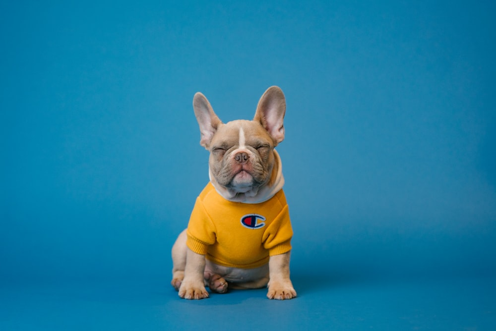
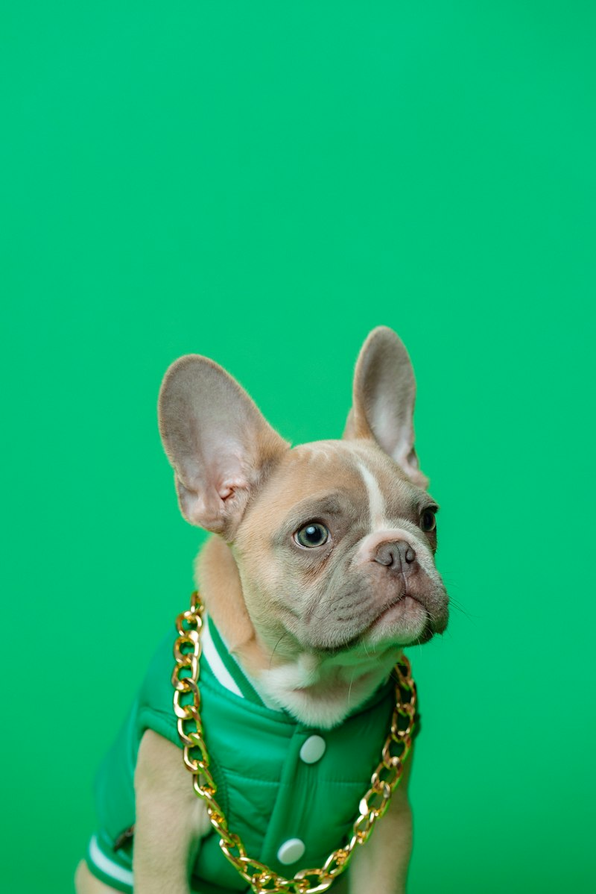
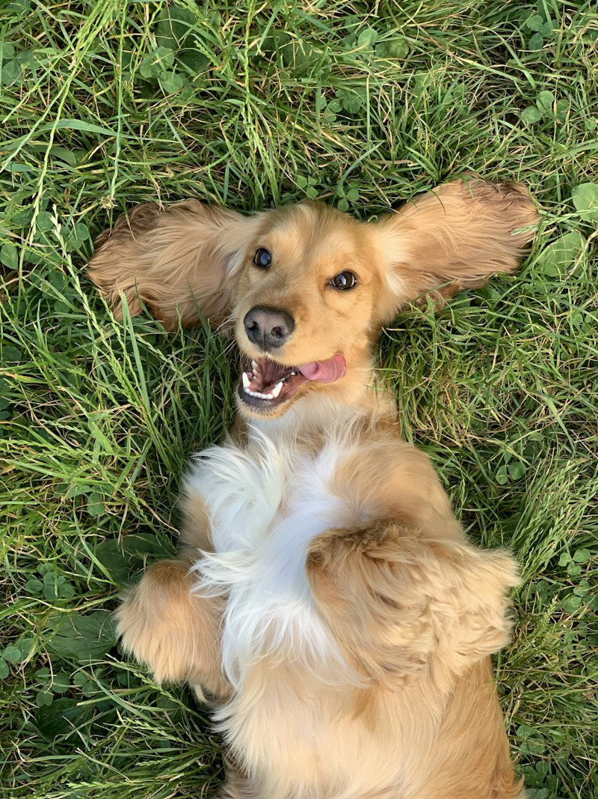
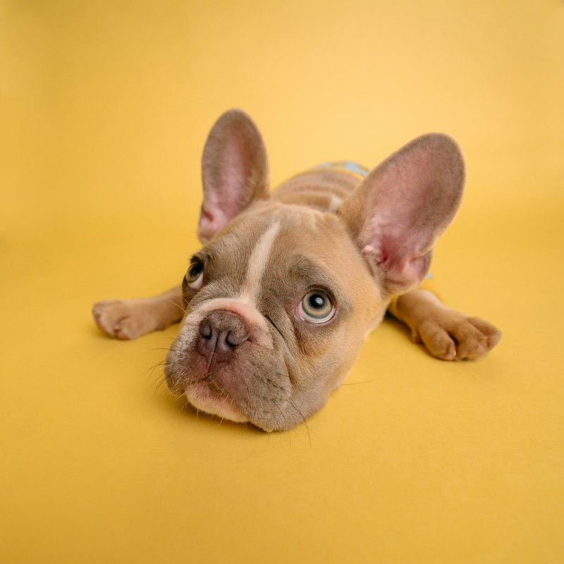
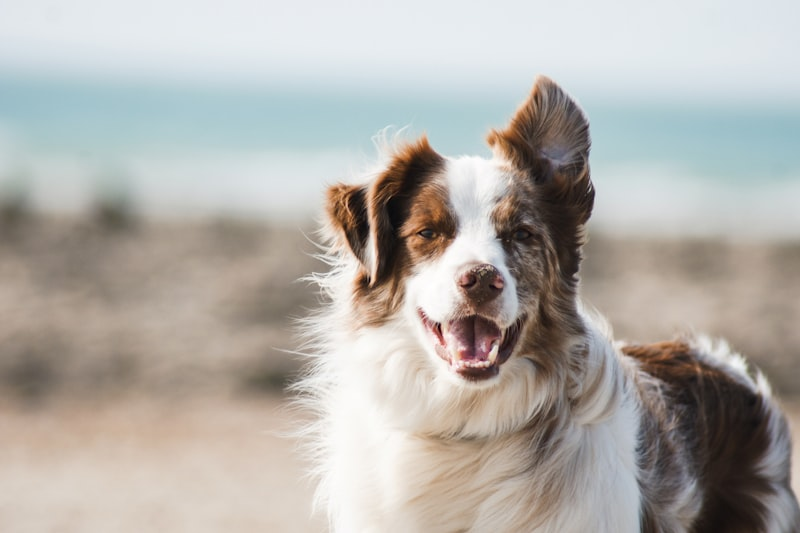

Кремовый Мальтипу —
живое облако нежности и преданности
Дизайнерская порода с шелковистой шерстью оттенка теплой ванили, кукольной внешностью мишки Teddy и ласковым сердцем. 100% гипоаллергенный друг для детей и взрослых.

Круглые глазки и курносый носик
Безопасен для аллергиков
Кто такой мальтипу и почему именно крем?
Мальтипу — это гибрид чистокровной белоснежной мальтийской болонки и благородного той-пуделя. Союз этих двух пород дал миру совершенную семейную собаку.

Мальтийская болонка
Подарила шелковистую, ниспадающую текстуру шерсти, кроткий нрав и бесконечную преданность человеку.
Той или Мини-пудель
Привнёс феноменальный интеллект, озорную пружинистую походку, крепкий иммунитет и богатую палитру окраса.
Кремовый окрас (Cream Maltipoo) — это редчайший баланс между кипенно-белым и ярким абрикосовым. Он не маркий, как снежно-белый, и обладает утонченной теплотой: шерсть играет переливами топлёного молока, ванильного зефира и мягкой крем-брюле.
У щенков поколения F1 (первая генерация) генетика распределяется в идеальной пропорции 50/50, гарантируя выразительную мордочку baby-face и густой шёлковый волос без подшерстка.
Градации кремового совершенства
Кремовый окрас — это не один цвет, а богатейшая гамма благородных оттенков. Выберите тот, который согреет ваше сердце.
Нежный Айвори
Изысканный молочно-сливочный тон с жемчужным сиянием. Выглядит благородно и свежо, подчёркивая тёмные угольные глазки и носик.
Ванильный Крем
Эталонный оттенок мальтипу! Тёплый цвет домашнего бисквита или пенки капучино с легкими карамельными переливами на ушках.
Персиковый Крем
Бархатистый оттенок спелого персика с кремовой основой. Солнечный, лучезарный окрас, который дарит ощущение уюта в любую погоду.
Крем с Абрикосом
Глубокий оттенок печенья с более насыщенными медовыми ушками и кончиком хвоста. Очень практичный и выразительный в стрижке Teddy.
Почему мальтипу покоряет миллионы сердец?
Внешность плюшевой игрушки дополняется золотым характером собаки-компаньона.
Идеальная гипоаллергенность
У мальтипу нет подшерстка, а структура волоса схожа с человеческим волосом. Они не линяют по сезонам и не накапливают аллергены.
Лучший друг для детей
Лишены гена агрессии, крайне терпеливы, обожают подвижные игры и с радостью разделят как веселье, так и тихий дневной сон.
Выдающийся ум
Гены пуделя дают невероятную сообразительность: мальтипу понимают интонации с полуслова и учат новые трюки всего за пару дней.
Удобно брать с собой
Благодаря весу до 3.5–4 кг мальтипу разрешено провозить в салоне самолета большинства авиакомпаний, ходить в рестораны и кафе.
Дружит с другими питомцами
Прекрасно ладит с кошками, птицами и другими собаками. В их природе заложено миролюбие и стремление дружить со всеми вокруг.
Эмпатия и антистресс
Мальтипу чувствуют настроение хозяина: когда вам грустно — придут обниматься и тихо положат мордочку на колени.
Очарование кремовых пушистиков
Полюбуйтесь нашими малышами в разном возрасте и с разными вариантами стильных стрижек.





Как ухаживать за кремовой шерстью
Простые секреты, которые сохранят шерстку вашего мальтипу шелковистой, мягкой и сияющей чистотой.
Ежедневный ритуал расчёсывания
Шерсть мальтипу напоминает человеческий шелковистый волос: чтобы не появлялись колтуны, достаточно уделять расчесыванию 3–5 минут в день.
- Инструменты: Металлический гребень с длинными вращающимися зубьями и пуходерка без капель на концах.
- Спрей: Всегда используйте легкий увлажняющий антистатический спрей перед расчесыванием — не чешите сухую шерсть.
- Зоны внимания: Области за ушками, под мышками и вокруг шеи.

Купание и косметика для кремового окраса
Кремовая шерсть не требует агрессивного отбеливания, в отличие от чисто белой. Главная задача — глубокое увлажнение и питание липидного слоя.
- Частота: 1 раз в 10–14 дней или по мере необходимости после прогулок.
- Шампунь: Профессиональный шампунь для светлой и кремовой шерсти без сульфатов.
- Кондиционер или маска: Обязательный этап для закрытия кутикулы волоса и предотвращения спутывания.
- Сушка: Тщательно сушите шерсть теплым (не горячим) феном, прочесывая пряди по росту волос.
Чистый и ясный взгляд: уход за глазками
У щенков со светлой шерстью в период смены зубов могут появляться слезные дорожки. Правильный уход сохранит мордочку чистой и опрятной.
- Ежедневная гигиена: Протирайте глазки ватным диском со специальным лосьоном (с ромашкой или экстрактом василька).
- Питьевой режим: Давайте собаке только фильтрованную или бутилированную воду (высокая минерализация воды может окрашивать шерсть).
- Миски: Используйте миски из керамики или нержавеющей стали, пластик накапливает бактерии.
Стрижка «Teddy Bear» (Мишка Тедди)
Фирменная стрижка, за которую кремовых мальтипу обожает весь мир. Мордочка подстригается по кругу, лапки оформляются в форме «столбиков», а шерстка на теле сохраняет бархатную плюшевость.
- Периодичность: Посещение грумера каждые 1.5 — 2 месяца.
- Первая стрижка: Гигиенический груминг (лапки, ушки, интимные зоны) проводится в 3.5 месяца, полноценная модельная стрижка — в 5–6 месяцев.
- Ушки: Можно оставить длинными шелковыми или подстричь короткими круглыми помпонами.
Подходит ли вам кремовый мальтипу?
Ответьте на 4 простых вопроса и узнайте, станет ли этот плюшевый хвостик идеальным компаньоном для вашего образа жизни!
1. Где вы планируете жить с питомцем?
2. Есть ли у вас или членов семьи склонность к аллергии?
3. Сколько времени вы готовы уделять общению и играм?
4. Какой характер друга вы ищете?
Идеальное совпадение: 98%!
Кремовый мальтипу — ваш абсолютный match! Ваш ритм жизни, ценности и отношение к питомцам сделают вас и щенка по-настоящему счастливыми.
Счастливые владельцы кремовых хвостиков
Искренние впечатления семей, в чьих домах уже поселилось кремовое чудо.
«Наш Оливер — это сплошное умиление! Цвет теплой ванили, шерсть нежнейшая, как кашемир. Главный страх был по поводу аллергии у сына, но за полгода ни одного чиха! Собака невероятно умная, на пеленку пошла со 2-го дня.»
Анна и щенок Оливер
г. Москва • 8 месяцев«Долго выбирали между пуделем и мальтипу. Кремовый мальтипу F1 превзошел все ожидания: стрижка Teddy делает из неё плюшевую куклу, на улице все оборачиваются. В поездках на самолете сидит тихонько в переноске под креслом.»
Ксения и малышка Мия
г. Санкт-Петербург • 1.5 года«Беспокоились, что кремовый окрас будет пачкаться. На самом деле всё легко: раз в день пройтись расческой с кондиционером и лапки после прогулки ополоснуть. Характер золотой, ласковая и чуткая до слез.»
Дмитрий и пушистик Зефир
г. Казань • 11 месяцевЧасто задаваемые вопросы
Всё, о чём важно знать будущему владельцу кремового мальтипу.
F1 (первая генерация) — это прямые дети мальтийской болонки и той-пуделя (50% на 50%). Именно они обладают эталонной кукольной мордочкой baby-face, идеальной шелковистой шерстью и самым крепким здоровьем. Поколение F1 считается золотым стандартом породы.
Да! У мальтипу нет сезонной линьки и нет подшерстка. Их волосяной покров растет непрерывно, как человеческие волосы. Волоски не осыпаются на ковры, мебель и одежду. Достаточно периодически расчесывать питомца и делать стрижку раз в 1.5–2 месяца.
Кремовый окрас очень стабилен. В отличие от насыщенного красного (red brown), который к 2–3 годам может светлеть, крем сохраняет свой благородный оттенок. С возрастом шерсть становится гуще и шелковистее, приобретает более глубокий перелив.
Мальтипу — собаки-компаньоны, они очень привязаны к хозяевам. Однако при правильном постепенном приучении они спокойно спят и играют с интерактивными игрушками во время вашего рабочего дня (4–7 часов). Главное — подарить им внимание и любовь по возвращении домой.
Породистый щенок переезжает в новую семью с международным ветеринарным паспортом со всеми прививками по возрасту (Nobivac / Eurican), микрочипом с регистрацией в базе данных, метрикой о происхождении, договором купли-продажи и памяткой по уходу.
Мечтаете о кремовом пушистике?
Оставьте заявку на персональную консультацию. Мы поможем выбрать идеального щенка по характеру, размеру и оттенку шерсти, а также покажем малышей по видеосвязи.
Заявка на подбор щенка
Заполните поля, и мы свяжемся с вами в течение 15 минут.